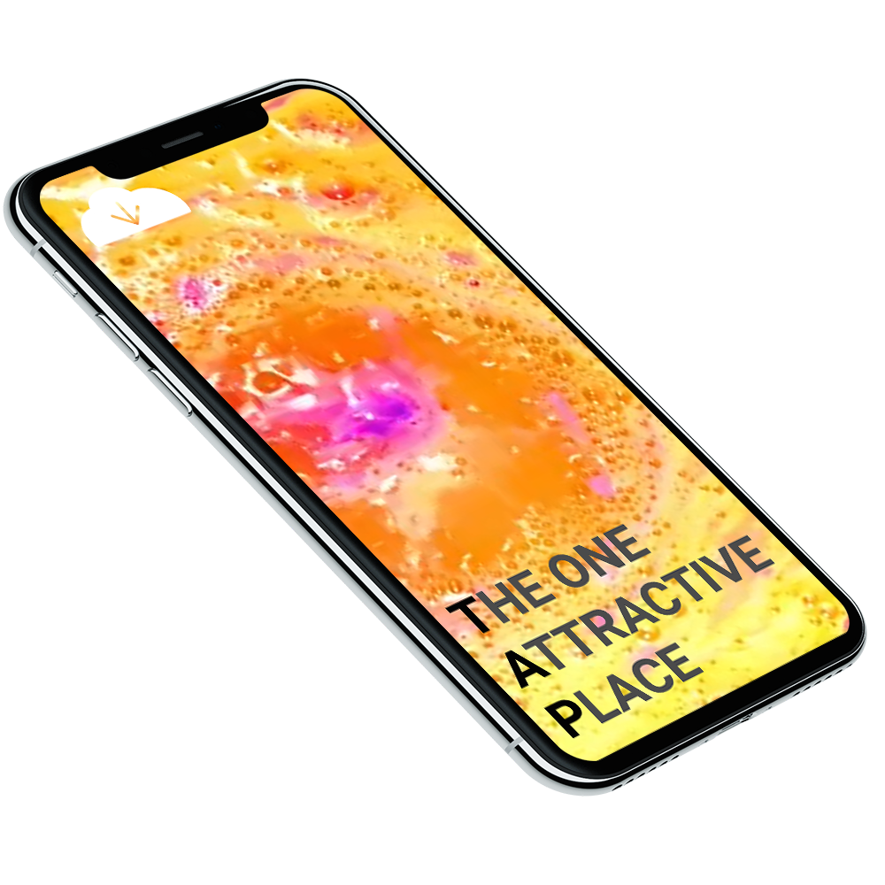

- 01.Project Name
- T.A.P
- 02.Team
- Shin na young
- Planner
- Shin yoo jung
- Planner/Design
- Lee ye jin
- Developer/Design
- 03.Result
- Video
- Structure
- 04.Date
- 2018.03-05
- 05.Awrad
- Cdak Communication Design
New Media Participation Prize
아시아 최대의 클럽 'Croma'에 소개해 보일 뉴미디어를 활용한 전시 작품을 기획,디자인,제작까지 담은 영상입니다.
키넥트와 유니티를 활용하여 특정 동작을 인식한 뒤, 인터렉티브 한 모션을
빔 프로젝터를 통해 샤막에 입혀 클럽이라는 공간에서 대상과 상호작용하는 듯한 효과를 내었습니다.
It is a video that shows planning, design and production of exhibition using new media which will be introduced in Asia's biggest club 'Croma'.
Kinect and Unity are used to recognize specific motion, and then interactively
Through the beam projector, I was able to cling to the shader, making it seem to interact with the object in the space of the club.
